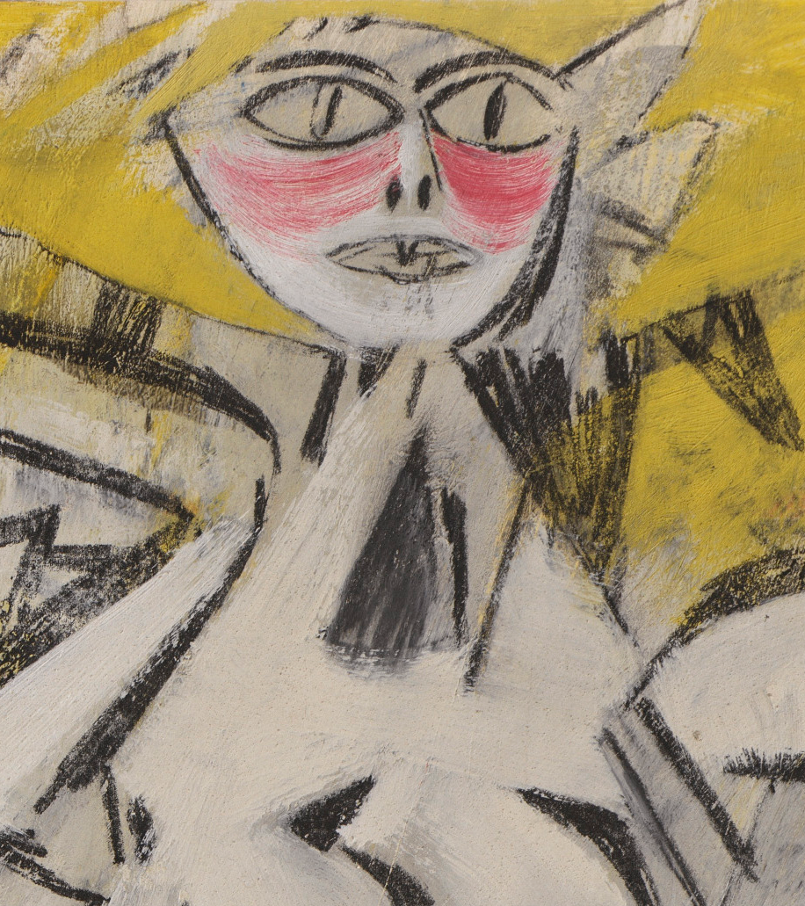
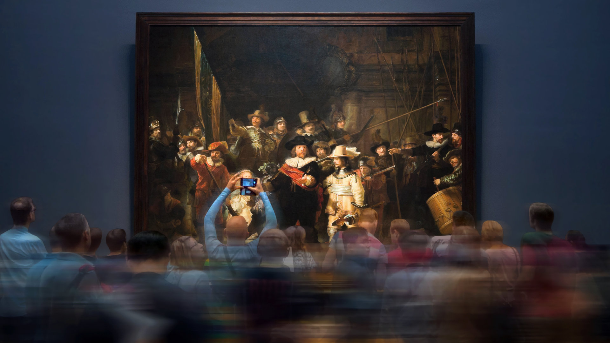
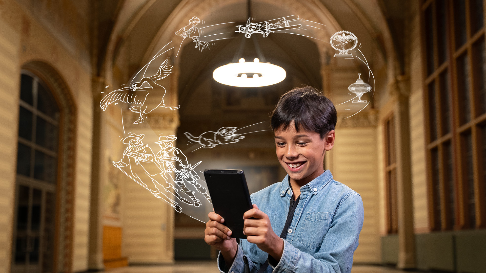
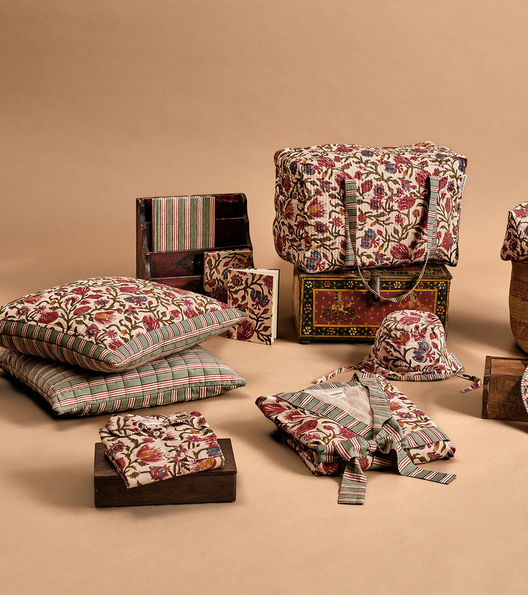

EXPECTED
Willem de Kooning at work
From 9 October

Home of The Night Watch, Home of The Milkmaid, Home of Dutch Masterpieces


From 9 October

Explore the collection in the Rijksmuseum Shop
Open daily 9 to 17h
Museumstraat 1, Amsterdam
Private design study. Official branding and photography belong to Rijksmuseum and their respective creators. Tickets open the official website.